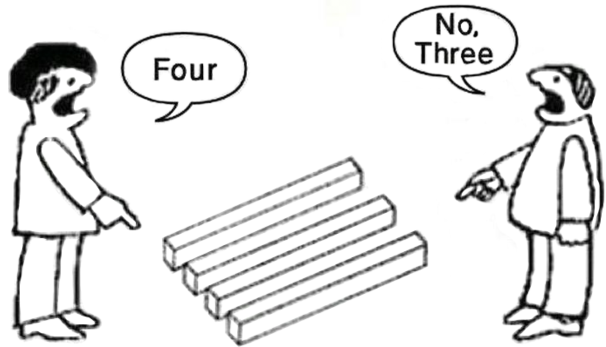
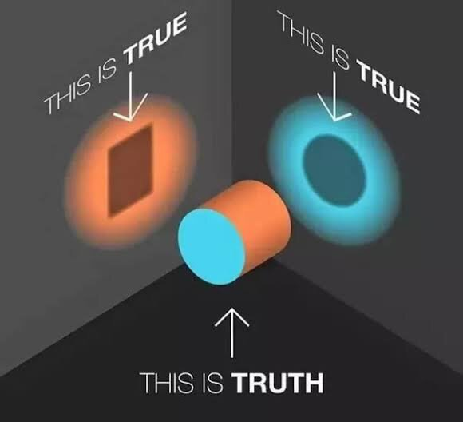
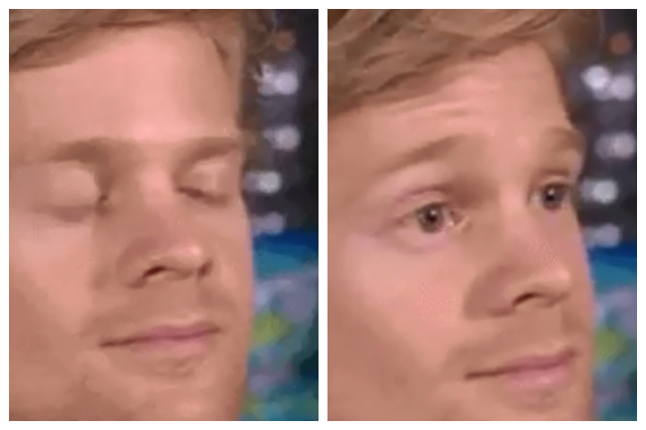
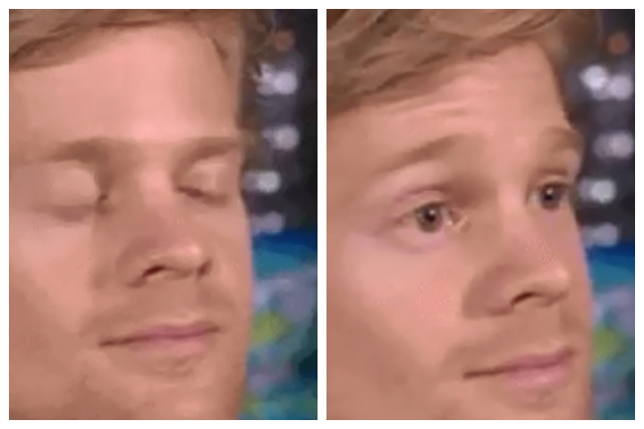

blue and black...
yellow and gold...
or neither?
 
 

- introduction to cameras gave a new meaning to paintings through manipulation of movement and sound
- art can now be used by anybody for their own purpose (like memes)
- being naked becomes a form of "uniform" and "garment"- a way for woman to look and act (objectification)
- oil paintings where the medium where the rich displayed just how rich they were
- publicity takes on a new turn over old tradition where a life and dream is being sold rather than being already owned
- "Oil paintings were surrounded by gold frames which symbolised the wealth around the owner within the picture and around it. What surrounds the publicity image is us, as we are." - John Berger